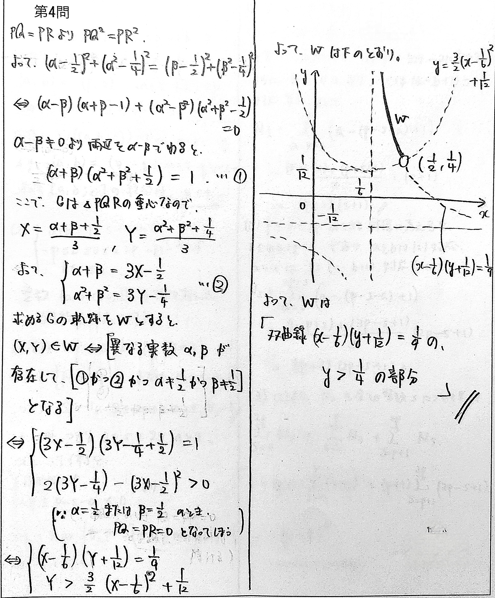

ブックマーク
東大理系数学 2011-4
座標平面上の1点 $P\left(\frac12,\ \frac14\right)$ をとる。放物線 $y=x^2$ 上の2点 $Q(\alpha,\ \alpha^2)$，$R(\beta,\ \beta^2)$ を，3点 $P,\ Q,\ R$ が $QR$ を底辺とする二等辺三角形をなすように動かすとき，$\triangle PQR$ の重心 $G(X,\ Y)$ の軌跡を求めよ。
方針、略解
座標が文字で与えられているので、素直に同値変形しましょう。

＞第5問が裏写りしてます。すみません...。
＞双曲線と放物線の交点が $(\frac12,\frac14)$ に限られることは一言くらい説明すべきかもしれません。
動く図解
問題の背景
対称な2文字に関する等式条件は、「どうせ左辺に寄せたら $\alpha-\beta$ で割れて、対称式のみの式になるんだろうな...」と言う意識があると役に立ちます。（今回であれば $\alpha,\beta$ に関する $PQ^2=PR^2$ という等式を指す。）
これは本質的には、「自然数 $n$ に対し、 $\alpha^n-\beta^n$ は必ず $\alpha-\beta$ を因数に持つ」という感覚に基づいています。（※）
また、異なる2実数条件(判別式＞0)を忘れないようにしましょう。今回は始めに図をイメージした時点で放物線の上側しかあり得ないことは直ちに分かるので、もし忘れていても気づくことは出来ます。（この話のたびに、悪魔の唇（↓）を思い出しますね...）
【悪魔の唇：東大1954】
点 $(x,y)$ が原点を中心とする半径1の円の内部を動くとき、点 $(x+y,xy)$ の動く範囲を図示せよ。
類題紹介
座標平面上の2点 $P,Q$ が，曲線 $y=x^2$（$-1\le x\le 1$）上を自由に動くとき，線分 $PQ$ を $1:2$ に内分する点 $R$ が動く範囲を $D$ とする。ただし，$P=Q$ のときは $R=P$ とする。
(1) $a$ を $-1\le a\le 1$ をみたす実数とするとき，点 $(a,b)$ が $D$ に属するための $b$ の条件を $a$ を用いて表せ。
(2) $D$ を図示せよ。
（東大2007）
(1) $a$ を $-1\le a\le 1$ をみたす実数とするとき，点 $(a,b)$ が $D$ に属するための $b$ の条件を $a$ を用いて表せ。
(2) $D$ を図示せよ。
（東大2007）